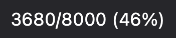
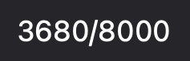
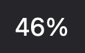
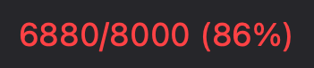

A tiny macOS menu bar app that shows the number of processes owned by the
current user and notifies when the count climbs past 85% of
kern.maxprocperuid — the limit that, once hit, causes fork() to start
returning EAGAIN and breaks terminals, browsers, and most apps.
Mirrors ps -u $USER | wc -l exactly so the menu bar number matches what you
see in a shell.
What the menu bar shows
The status item shows your per-UID process count against the cap. The default is
text — <count>/<limit> (<pct>%) in monospaced digits — but the Display
submenu offers eight configurations: three text, four custom-drawn meters, and
the octopus.
The octopus grows and heats up with the count: four green arms below a quarter of the cap, four yellow below half, eight orange below three quarters, eight red above that.
| Mode | displayMode |
Menu bar |
|---|---|---|
| Count / limit / pct (default) | countTotalPct |
 |
| Count / limit | countTotal |
 |
| Percent | percent |
 |
| Gauge (needle) | gauge |
 |
| Arc | arc |
 |
| Pie | pie |
|
| Wedge | wedge |
|
| Octopus (grows) | octopus |
four to eight arms, green to red — see above |
Severity is colour-coded on the icon modes — green < 50%, orange < 85%, red ≥ 85% — and the text modes turn red at/above the 85% threshold:
| 30% (green) | 70% (orange) | 90% (red) | text ≥ 85% |
|---|---|---|---|
 |
 |
 |
The threshold notification has a 5pt hysteresis so a single bounce around the limit doesn't spam alerts.
Click the icon for:
- Sparkline of the recent count history.
- Crash-looping submenu — names caught by the respawn-loop detector (shown only when there's something to report).
- Top spawners submenu — the processes spawning the most children; click an entry to open a floating detail window for it.
- Open Activity Monitor (⌘A).
- Start at Login toggle.
- Quit (⌘Q).
The detail window auto-refreshes every 2s while open and has a manual Refresh button. There is no "Refresh now" in the main menu — the 5s polling loop makes it redundant.
Build
Requires Xcode command line tools (Swift 5.9+, macOS 13+).
./scripts/build-app.sh
Produces build/ProcessMonitor.app. The script wraps the Swift Package
Manager binary in a .app bundle and ad-hoc codesigns it — the signature
is required, because UNUserNotificationCenter silently drops notification
requests from unsigned bundles and threshold alerts won't fire.
Run
open ~/Applications/ProcessMonitor.app
~/Applications/ProcessMonitor.app is a symlink to build/ProcessMonitor.app,
so rebuilds propagate without re-copying. The icon appears in the menu bar
(no Dock icon — LSUIElement is set).
On first launch macOS will ask for notification permission. Approve it, otherwise the threshold alert can't fire.
Configuration
Tunables live at the top of Sources/ProcessMonitor/main.swift:
warnPct— threshold in percent (default85)pollSeconds— refresh interval in seconds (default5)
Rebuild after changing.
Start at login (optional)
Use the Start at Login toggle in the menu. It registers the app via
SMAppService.mainApp (bundle-ID based) rather than a LaunchAgent —
macOS manages the lifecycle, and the app must live in /Applications or
~/Applications for registration to be accepted (which is what the
~/Applications symlink above provides).
Alternatively, add the app under System Settings → General → Login Items ("Open at Login"). Use one method, not both, or it may launch twice at login.